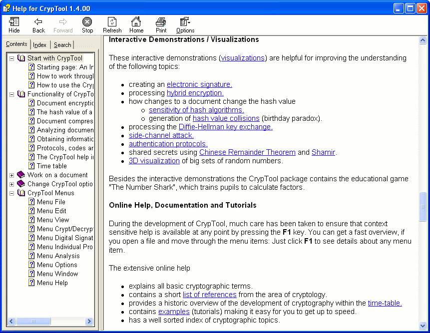

Online help is available for all topics in CrypTool. All help pages can be printed out.

Clicking on a topic that is underlined or in a different color will show another help window on that topic. You can return to the previous topic by clicking on the Back button in the help.
In addition, the Content, Index and Search tabs
can also be used to search for subjects or terms.
The entries below Contents and Index have beem assembled by the programmers of CrypTool.
The full-text search below Search is done by the HTML-help tool automatically.
All tabs can be faded in and out with the left-most button in the icon bar of the online help window.
The online help contains a help page for every dialog and every menu option, and also for all the icons on the toolbar.
Moreover, various tutorials / scenarios / examples (which can be accessed via the help index, via scenarios and via the CT Book) can be called up, for example on encryption algorithms or prime numbers.
Opening the online help
Help for the CrypTool program can be requested in a number of different ways:
Closing the online help
To close the help window, enter Alt-F4 or click on the menu icon Close, which is in the system menu at the left of the title bar.
When you close down CrypTool, the CrypTool help window will automatically be closed too.